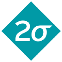 Storage Monitor
During my internship at Two Sigma, I was tasked with building a platform for analyzing and monitoring internal storage systems. As a data-driven company, hundreds of petabytes of data are stored internally in various systems and data centers. To help keep track of the growing data storage (as well as things like misconfigured storage), I built a REST API that allowed you to query storage URIs and attributes like storage owners, total size, etc. This was backed by a "scraper" service that communicated with the various storage backends to collect the various metrics and settings for each storage location. The eventual goal for this platform is enabling better resource management by eliminating extra backups for unimportant data, cutting down on storage for abandoned data, and helping users optimize caching/pinning for their data to enable better performance.
Python, Flask, PostgreSQL, SQLite, ElasticSearch, lots of internal tools
 Deadlock-detecting Programming Language
Deadlock-detecting Programming Language
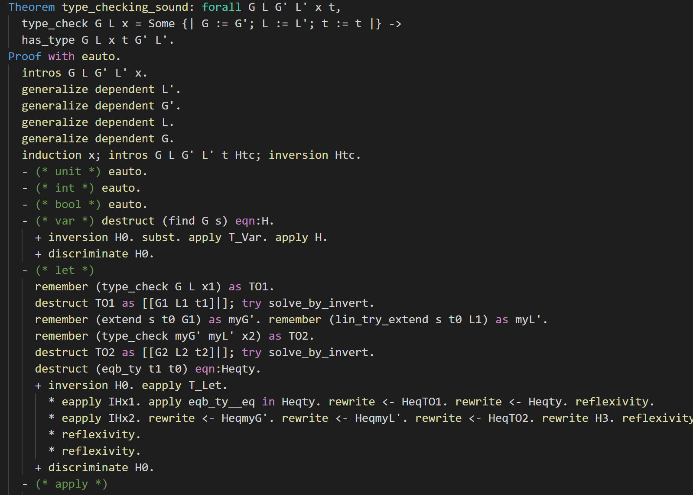
In my research, I've been working in the Habanero
Lab at Georgia Tech under Vivek Sarkar
and Caleb Voss. My project consists of a programming
language designed to statically detect deadlocks. The language consists of a simple
concurrent programming language built on top of Java and utilizes promises as it's core
concurrency primitive. To aid in the static analysis, the language enforces that all
promises are fulfilled in every code path by utilizing substructural typing (future work
might visit static analysis for promise-dependency relationships to provide a complete
deadlock detection system). A simple compiler (complete with a type checker, small runtime,
and Java code generation) has been implemented in OCaml and I'm currently working to
formally prove the language's semantics using the Coq proof assistant.
OCaml, Coq, LaTeX, Java, Type Theory
 Rust Operating System for Raspberry Pi
Rust Operating System for Raspberry Pi
When I took Operating Systems (CS3210), our semester long project involved building an
operating system for the Raspberry Pi Model 3B+ in Rust. Our OS featured a "networked"
bootloader over XModem+UART, support for the Pi's GPIO and timers, bin and bump memory
allocators, a FAT32 filesystem, preemptive multitasking, a number of syscalls, and
virtual memory. As our final project, my group focused on adding write support for the
filesystem along with full-disk encryption. We also added support for mounting multiple
filesystems, environment variables, file descriptors/locking files, command-line
arguments and built a userspace shell using some POSIX-like syscalls.
(Wow, too many class projects -- gotta find some time to work on some personal projects
soon).
Rust, ARMv8/aarch64 assembly, Raspberry Pi
FPGA SRAM interface
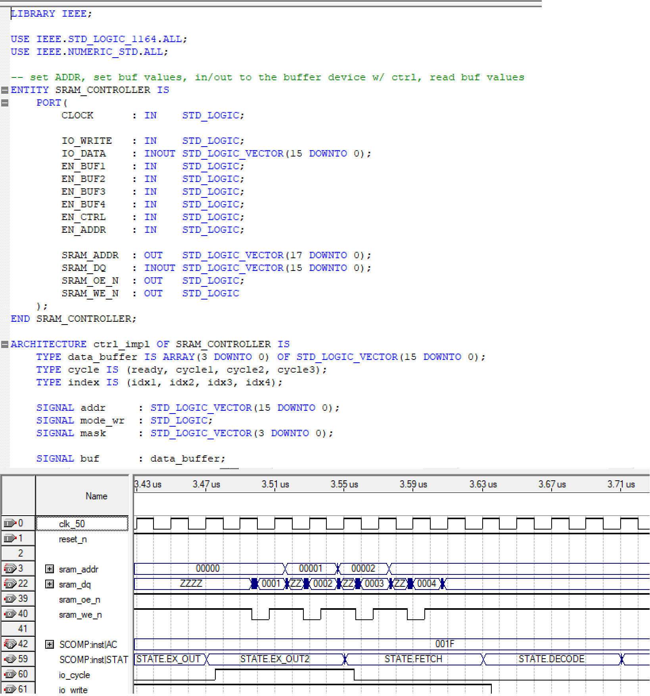 As our final project for my Digital Design Lab (ECE2031), we were tasked with designing and implementing an SRAM interface for a simple computer on an Altera DE2 FPGA. Optimizing for performance, we chose to create a device with qword addressability, which enabled users to take advantage of spatial locality by performing multiple loads/stores simultaneously. We also clocked our interface asychronously from the CPU, which allowed us to communicate with the SRAM between CPU clock cycles. While not the most technically complex project on here, this project really helped me learn more about VHDL and FPGAs in general.
Altera FPGAs (DE2), VHDL, SRAM, Quartus, Logic Analyzers, Oscilloscopes
Optimizing Tiger Compiler
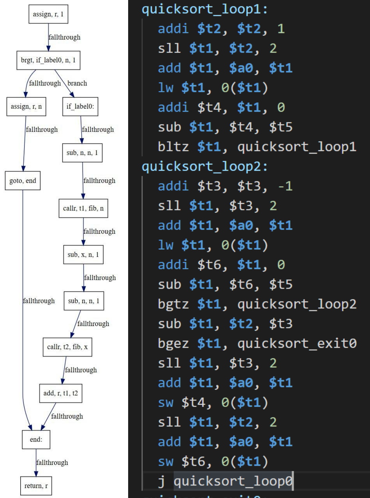 In my compilers class (CS4240), we completed a toy compiler for the Tiger programming language. Using OCaml, our team developed a complete middle-end and backend for the MIPS-32 architecture. Heavily utilizing dataflow analyses, the compiler featured deadcode elimination, copy propogation, and Chaitin-Briggs register allocation. Best of all, I got the chance to finally use Nanocaml in a real project!
OCaml, Nanocaml, OCamlGraph, MIPS-32, Dataflow Analysis
Pipelined Processor Datapath
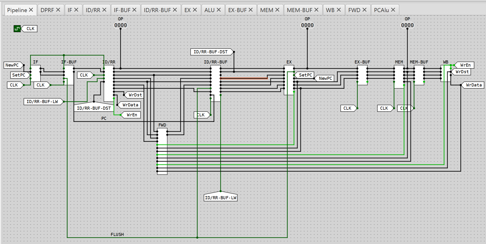 For my Systems & Networks class (CS2200), we designed a number of datapaths for a RISC computer based on MIPS. We individually designed a simple datapath for this computer in a logic simulator called "CircuitSim", then built on top of it to add interrupts and support for external I/O devices. As an extra credit project, I created a 5-stage pipeline version of the computer, which supported data forwarding and flushing the pipeline in order to resolve various hazards.
CircuitSim (logic simulator), "LC-2200" ISA
 WebAssembly N-API port
WebAssembly N-API port
In 2019, I spent my summer at Google working with all the awesome folks on the
Node.js team. As my internship project, I was tasked with rethinking how Node.js
programs can compile with native libraries (compiled to WebAssembly). After
prototyping a tool for generating glue code for bindings in C and JS, I decided on
an approach based around the Node API (N-API). N-API's ubiquitous use for native
libraries meant it was a great choice for porting existing libraries to WebAssembly
and, more importantly, it was designed to be extremely portable. Taking advantage of
this portability, I set out creating a port of the API to WebAssembly bindings. To
do so, I created a fork of V8 that supported providing vendor "built-ins" to
WebAssembly code. I then used C++ templates to generate type-safe wrappers for all
N-API functions and finally modified the Node module loader to support these
special WebAssembly "native modules."
C++, V8, Node.js + N-API, C, WebAssembly, TypeScript, JavaScript
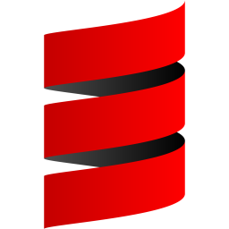 Scala Risk Game
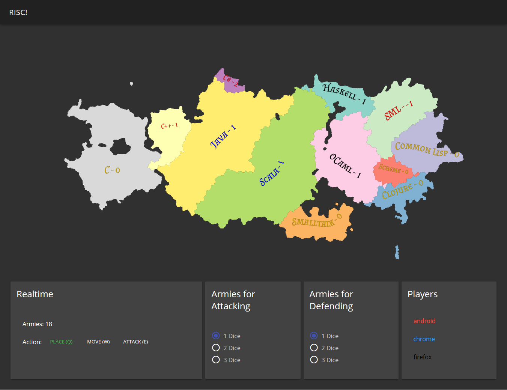 As our group project for my Objects & Design class (CS2340), my team created created an implementation of the Risk board game. Our game featured real-time (rather than turn-based) gameplay, a WebSocket-based server, and a companion mobile app. We designed the backend using Scala + Play + Akka and wrote the frontend in JavaScript using Vue as well as a mobile version in Dart/Flutter.
Scala, Play, Akka, WebSockets, JavaScript, Vue, Dart, Flutter
GBA 8-ball Game
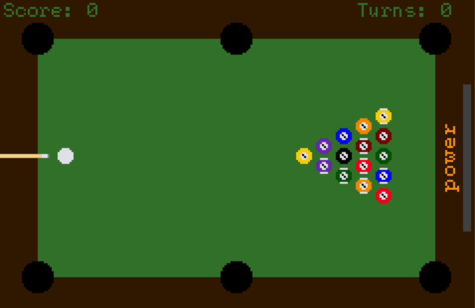 For my Computer Organization class (CS2110), we were tasked with creating a small GameBoy Advance game at the end of the year. I chose to create an 8-ball pool game in ~a week using C. Collisions are calculated using a tiny physics engine I wrote that utilizes fixed-point math. Drawing is done mainly using sprites (for the balls) and affine sprites (for the cue, i.e. sprites with a transformation matrix).
C, GBA BIOS
Revery
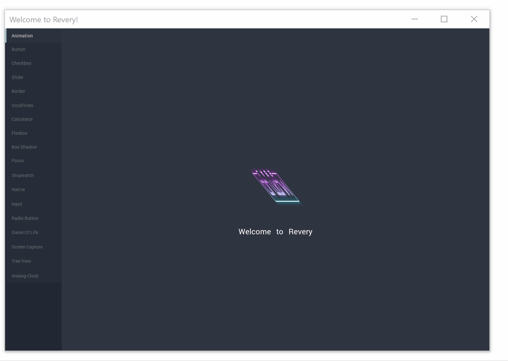 Revery is a desktop GUI framework largely inspired by Flutter and Electron. The framework is written in ReasonML and compiles to native code, using a React-like API to make development simple. The components are implemented in OpenGL/WebGL to allow for a seamless experience across all platforms in the same way that Electron and Flutter provide. The project was originally created by Bryan Phelps, and I'm one of many collaborators for the project.
OCaml/ReasonML, C, GLFW, WebGL, JavaScript, SDL2
Quartz
Quartz is a research project that aims to create a strongly-typed language for
the world of message-passing, concurrent code. Largely inspired by the Alpaca
project, which aims to give Erlang static typing, Quartz attempts to apply
multiparty session type theory to Erlang-style code. In order to do so, the
compiler implements a novel type inference/type checking algorithm based on
Pierre-Malo Deniélou's and Nobuko
Yoshida's research into global session type synthesis. The language itself
is based loosely on Ruby and Elixir and compiles to Erlang code, but is designed
around a new paradigm for actor programming using first-class session objects.
OCaml, Erlang/BEAM VM, Multiparty Session Types
 Rolltrax
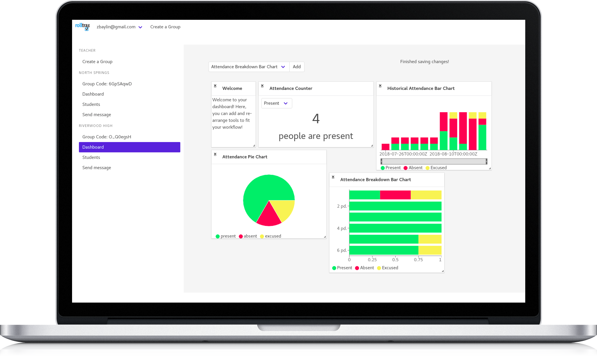
Rolltrax
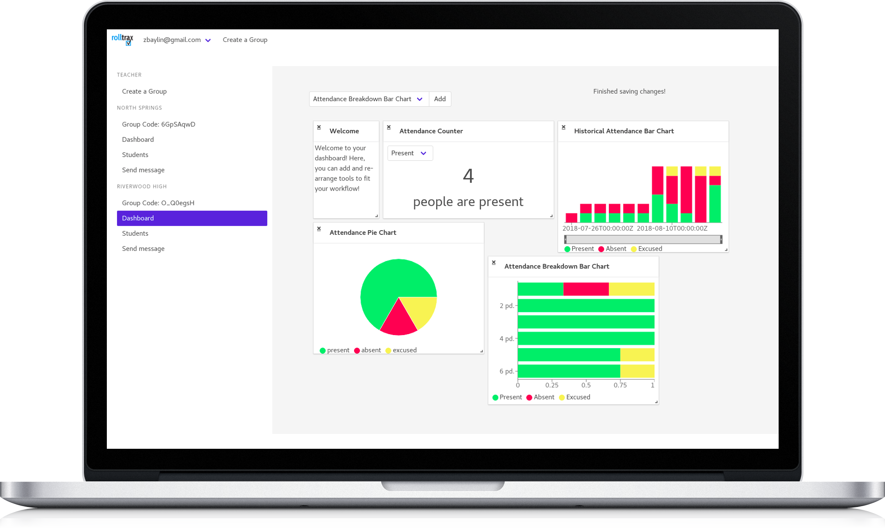
Rolltrax started in late 2017 when my Work-Based Learning teacher, Brian
Patterson, brought up the many challenges of having student interns to me and
my friend Zach Baylin. Together, the three
of began implementing a website for managing off-campus students' attendance.
This quickly evolved into a full-fledged app, complete with user-customizable
dashboards to view metrics about student performance, a route manager for
teachers travelling between job locations, and tools for employers to evaluate
students' performance. The latest revision of the web app is written in Crystal
(using Kemal) and ReasonML (using ReasonReact), while the mobile app is written
in Flutter.
Crystal, Kemal, ReasonML, React, Python, Qt, Ruby, Sinatra, Flutter, Dart, Postgres, GCP
Nanocaml
Having been interested in compiler design for a while, I was intrigued when the
idea of nanopass architecture was first brought up to me. This style of writing
compilers utilizes a large number of passes, each of which performs only a tiny
transformation on the input program. After watching a talk and using the Racket
nanopass library for a school project, I became inspired to design a similar
system for OCaml. Using a PPX preprocessor, my friend
Milo Turner and I whipped up a quick
prototype of what such a library could look like. Though not yet battle-tested,
this library provides a number of powerful abstractions for writing compilers
quickly and easily.
OCaml, Nanopass Compilers, PPX preprocessors
Kesef
Over the summer of 2018, I became very interested in learning about finance. As part of this, I spent quite some time learning about financial statements such as those found in the 10-k/q SEC filings. To make browsing these forms easier, I used Perl6 to create a program called Kesef, which used a web scraper and RSS feeds to create a database of company filings. I also added some more features, such as rudimentary parsing of the XBRL documents to create tables of financial data and sourcing trading information from the IEX Trading API.
Perl6, XML (XPath, XQuery, and XSLT), IEX API
 Bibliotech
Bibliotech
During my senior year of high school, I competed in FBLA's Mobile Application
Development competition with Zach Baylin and
Eric Miller. For the competition, we
were tasked with creating an app for browsing and checking out library books.
After a failed first attempt using the Jasonette framework, we switched to
Flutter (and fell in love with it!). The backend of the app was implemented in
Ruby using Sinatra and PostgreSQL.
Flutter, Dart, Ruby, Sinatra, PostgreSQL